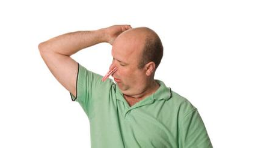

腋臭的危害有过度焦虑，因为自己身体随时都在散发着刺鼻的气味，所以很多患者每天都会害怕引起别人对自己的不满甚至厌恶，长期下去，心理上就会背负沉重的负担，导致焦虑症状的发生，严重者甚至会造成早衰等现象。

很多人对腋臭都没有一个正确地认识，以为腋臭仅仅是发出难闻气味从而影响别人对自己的看法，或者影响自己的生活。其实不仅仅如此，腋臭还存在其它的危害。大家可以通过以下专家对腋臭危害的讲解去学习一下关于腋臭的知识。
专家表示，腋臭的危害有：
1、严重失眠，由于长时间受到腋臭的折磨，患者往往会过度焦虑、紧张，时间长了这种负面的精神情绪，就会造成内分泌调节和大脑中枢神经的紊乱，失眠多梦等精神疾病，从而影响腋臭患者的睡眠质量，这是腋臭的危害。
2、腋臭的危害有过度焦虑，因为自己身体随时都在散发着刺鼻的气味，所以很多患者每天都会害怕引起别人对自己的不满甚至厌恶，长期下去，心理上就会背负沉重的负担，导致焦虑症状的发生，严重者甚至会造成早衰等现象。
3、容易暴怒，长期受困于腋臭，很容易导致患者情绪不稳定，这种压抑的情绪无处可渲，他们便会对周围的人和事全都产生莫名的反感，甚至动怒动粗，这也是腋臭的危害之一。
4、沮丧绝望，很多腋臭的治疗方法是治标不治本，比如药物治疗，只能在短期内控制住臭味的产生，另外传统手术的治疗过程痛苦，腋臭的危害复发率高，总是让怀抱希望的患者心情一次次跌落谷底，久而久之就会变得非常绝望。
对腋臭的危害有一个详细了解以后就能明白腋臭对自身有多大的危害，这样一来在生活中就能进行更好的预防和治疗，更能让患者清楚地明白和认识到腋臭存在的不好因素。